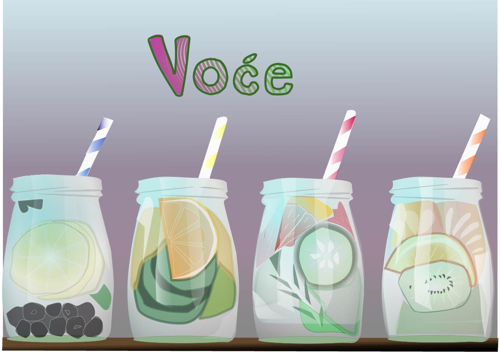
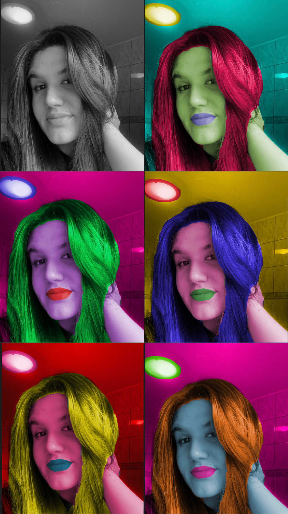

MOJE VJEŽBE
1. vježba - font
2. vježba - Bezierova krivulja, precizno crtanje
3. vježba - boja, transformacije
<
4. vježba - gradijenti, transparencija
projektni zadatak - vektorska grafika

5. vježba - retuširanje
6. vježba - koloriranje

7. vježba - fotomontaža

projektni zadatak - piksel grafika
8. vježba - cinemagraf